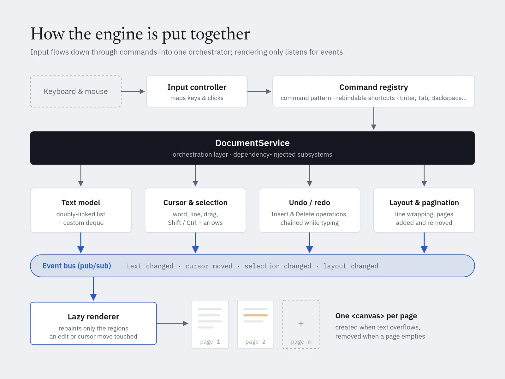
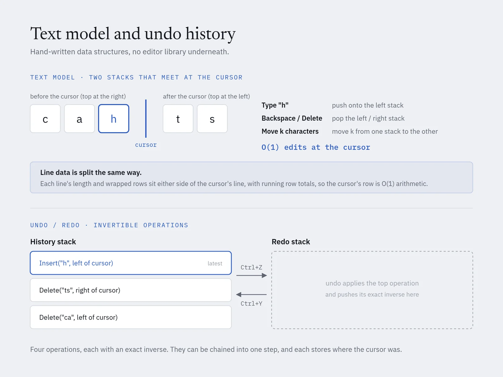
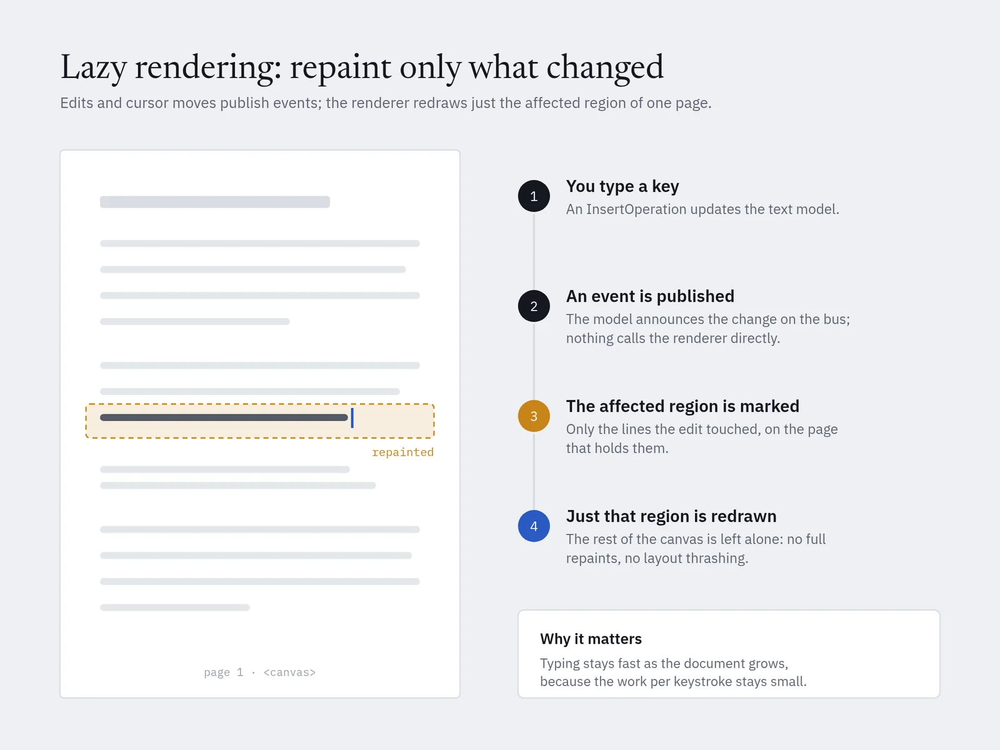

Why build it
Most web editors sit on contenteditable or a library like ProseMirror. I wanted to understand what those hide, so I wrote every layer myself: how text is stored, how it becomes lines and pages, how it's painted, and how the cursor, selection and undo stay consistent through all of it.
What it does
- Multi-page documents. Text flows onto new pages as you type and empty pages disappear. Each page is its own canvas, and clicks map back to the right page and position.
- Cursor and selection. Arrow keys, Shift and Ctrl combinations, word, line and drag selection, across wrapped lines and page breaks.
- Undo and redo. Every edit is an insert or delete operation on a history stack. Continuous typing merges into one step, and undo restores the cursor too.
- Commands. Keyboard input goes through a command registry, so shortcuts can be rebound.
Architecture

Keyboard and mouse go to an input controller, then a command registry, then a document service that coordinates the text model, cursor, history and layout. Those publish events, and the renderer listens. Nothing calls the renderer directly, so each part can be tested and replaced on its own, and subsystems are passed in by dependency injection.
The text model

Text lives in a doubly linked list backed by a custom deque. Typing at the cursor relinks two neighbouring nodes instead of shifting an array, so an edit near the cursor costs the same however long the document is.
Lazy rendering

An edit marks only the affected region of one page for repainting, so typing stays fast as documents grow.
Next
Real-time collaboration: a server that orders and transforms operations (OT, or a sequence CRDT), shared cursors, per-user undo and merging offline edits.